가온시교육연수원 2026 직무연수 · 3시간
학교 데이터로 수업 바꾸기
출결·과제·형성평가 기록을 읽고, 차트로 말하고, 다음 수업을 고치는 3시간
1,440칸
한 학기, 한 반에 쌓이는 기록 · 30명 × 12주 × 기록 4종
41%7주차 정답률
오늘의 흐름
14:30~17:30 · 지금 하는 순서에 빨간 선이 서요. 교재 3쪽 보기
들어가며15분 · 출석·첫 투표
1부 데이터 읽기45분 · 실습 1(25분)
쉬는 시간10분
2부 차트 만들기45분 · 실습 2(30분)
3부 AI와 함께 해석하기40분 · 실습 3(25분)
마무리 · 만족도 조사10분
오늘의 목표
- 기록에서 수업 질문 하나 세우기
- 질문에 맞는 차트 한 장 그리기
- AI의 해석을 교사의 판단으로 검증하기
이수 기준
3시간 직무연수 · 출석 90% 이상 · 과제 제출
입장
세 가지만 해 두면 바로 시작해요. 교재 4쪽 보기
교재
강사 화면과 함께 넘어가요. 놓친 쪽은 직접 넘겨 봐요.
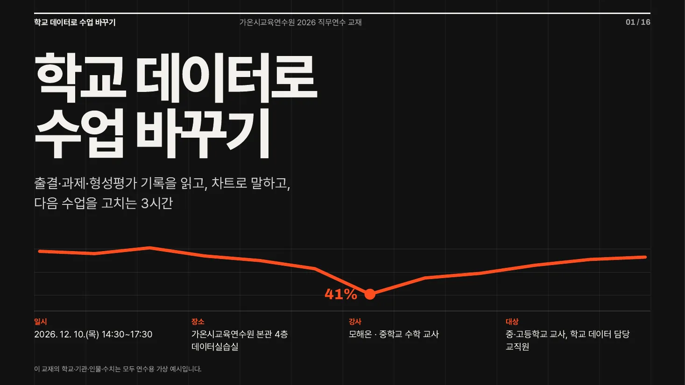
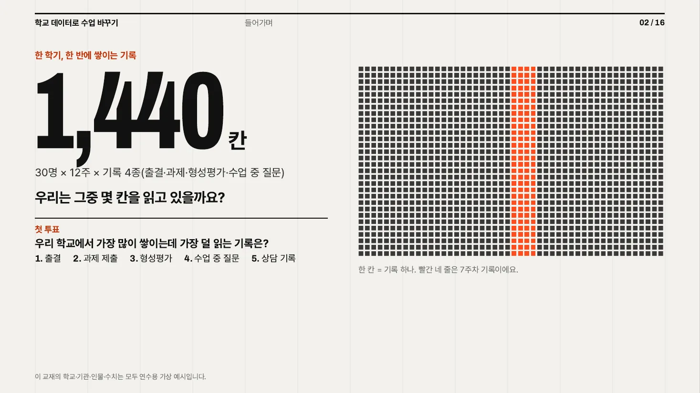
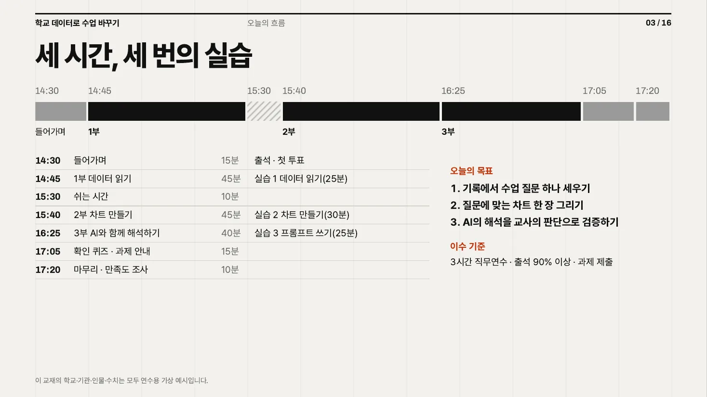
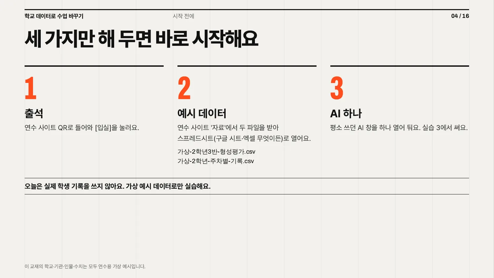
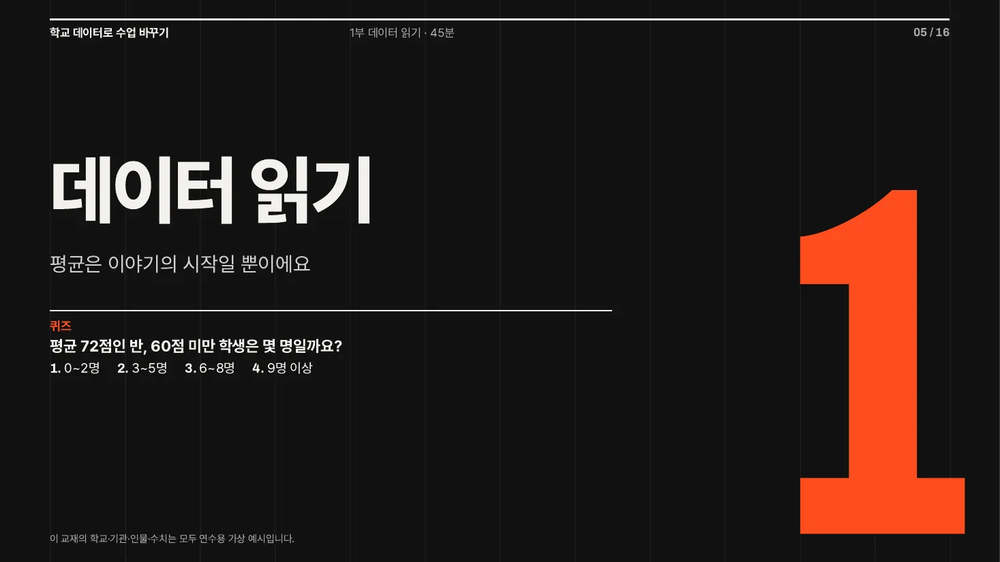
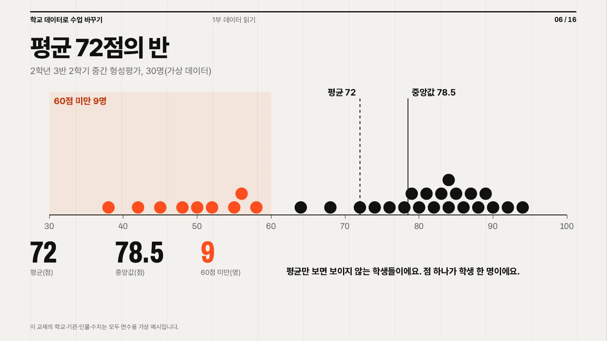
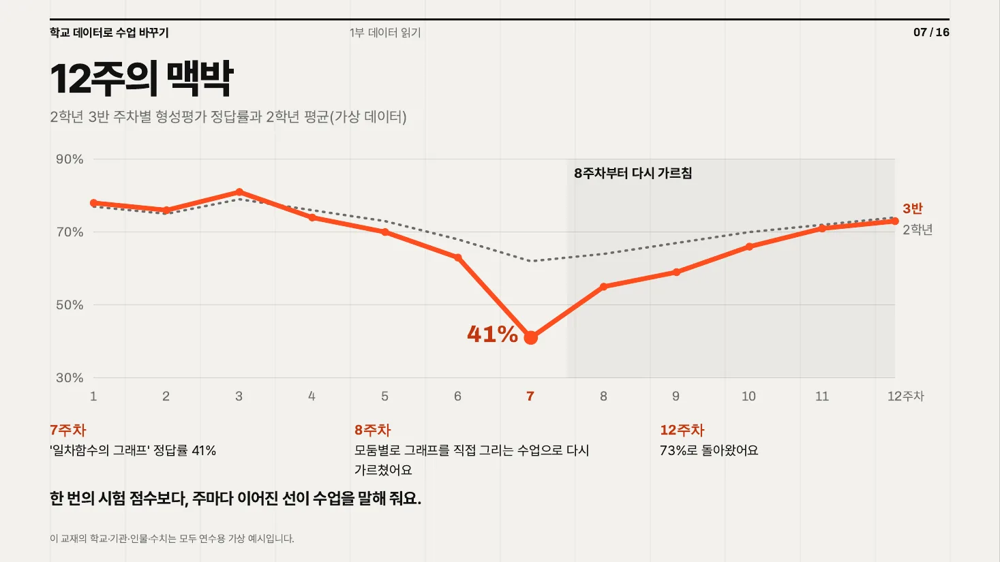
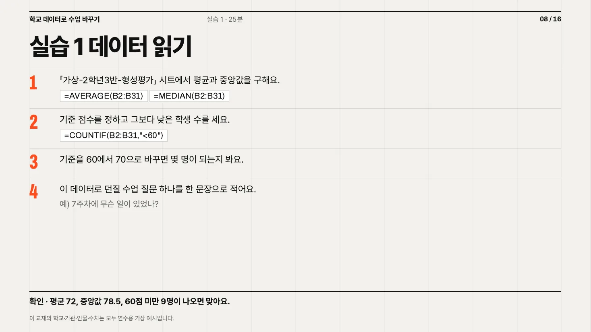
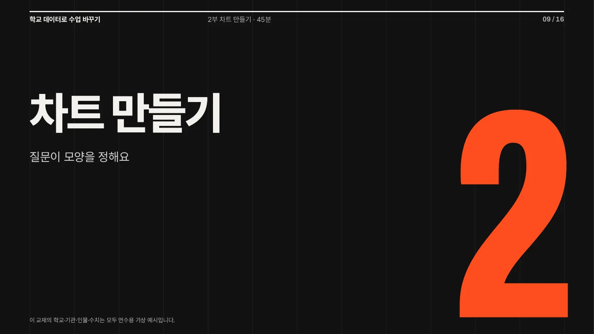
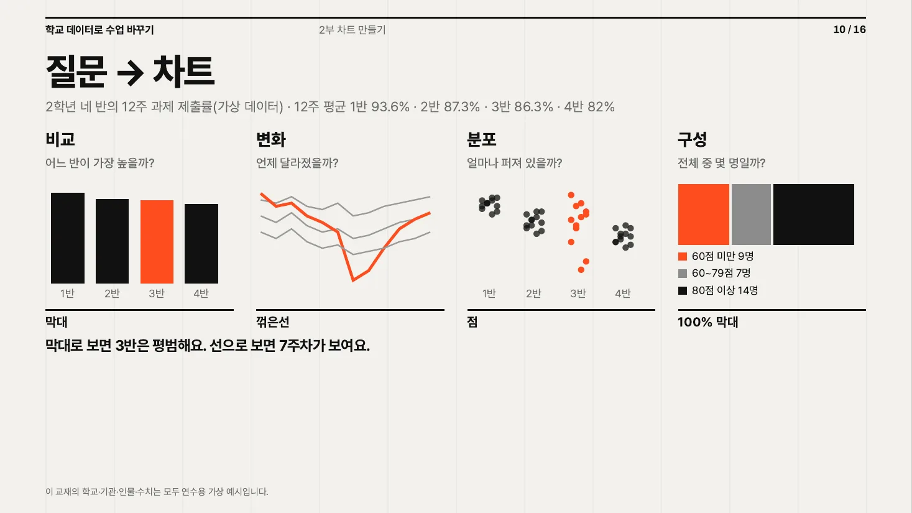
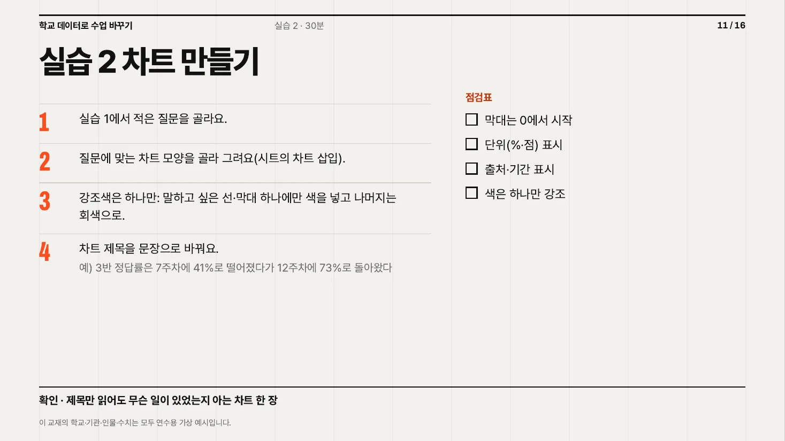
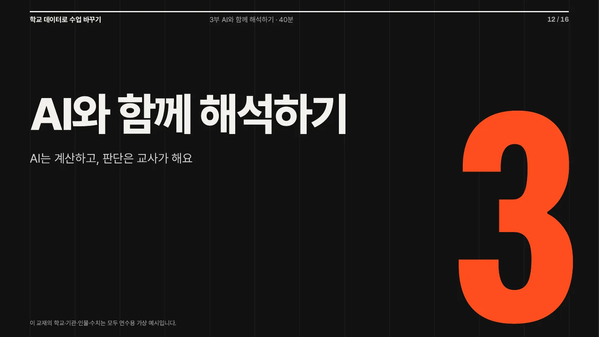
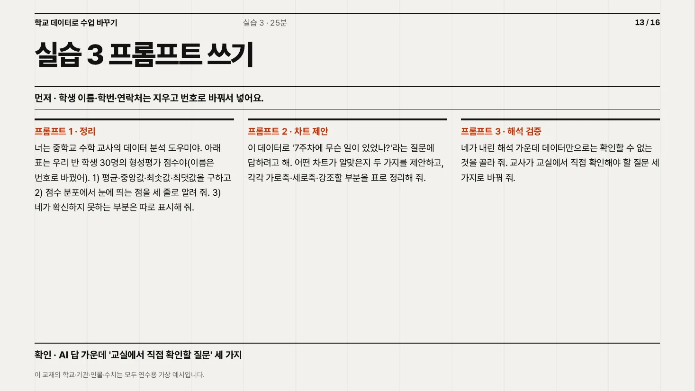
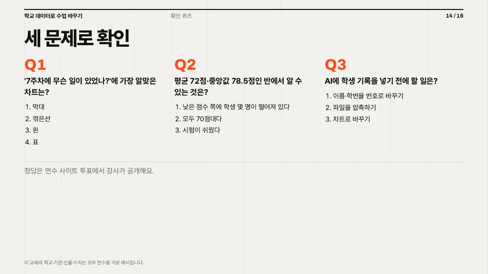
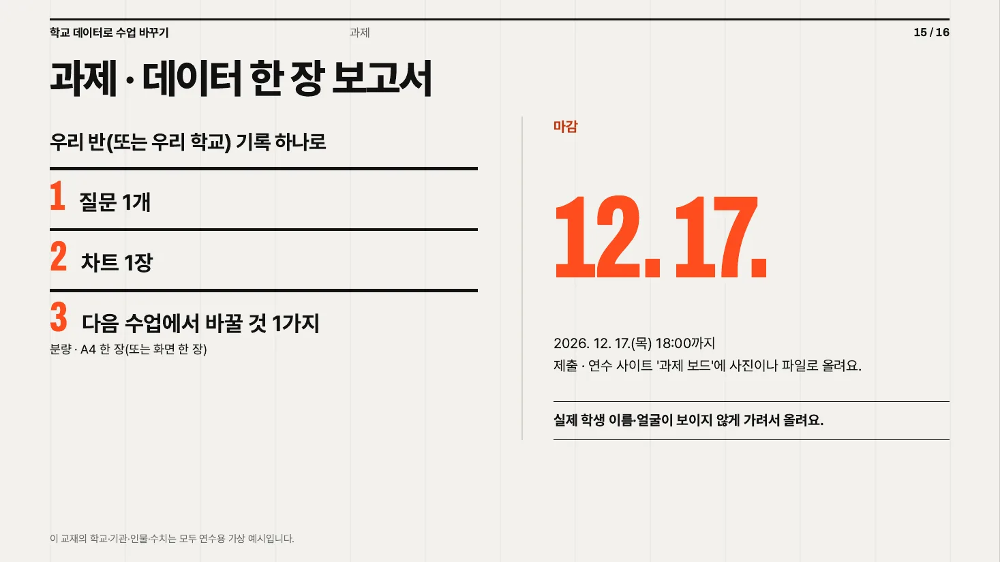
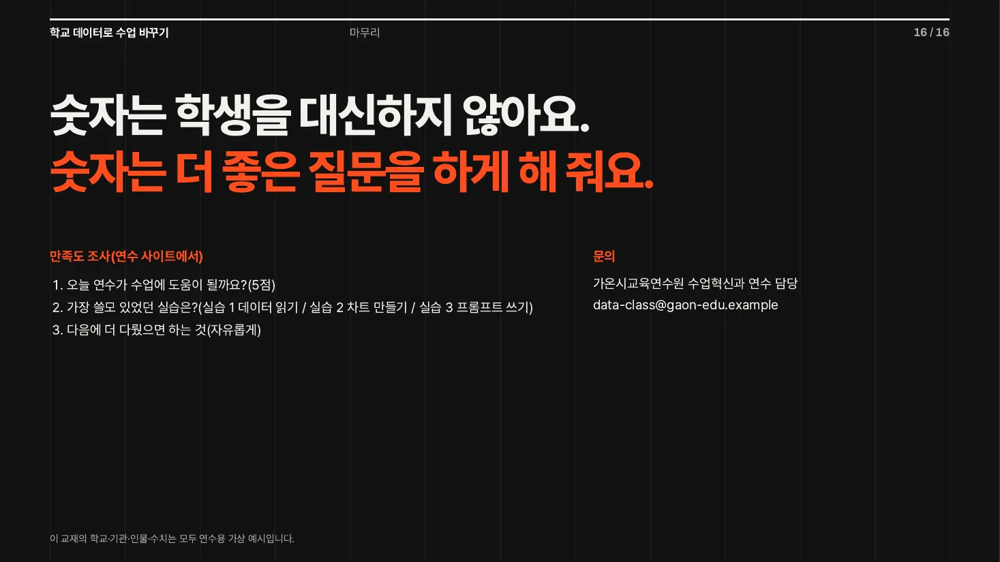
실습
실습마다 단계·복사할 원문·확인 도구를 따로 모았어요.
질문 · 퀴즈
질문은 이름 없이 올라가요. 퀴즈 정답은 강사가 공개해요. 교재 14쪽 보기
- 아직 질문이 없어요. 첫 질문을 올려 주세요.
평균 72점인 반, 60점 미만 학생은 몇 명일까요?
강사가 투표를 열면 여기에 나타나요.
'7주차에 무슨 일이 있었나?'에 가장 알맞은 차트는?
강사가 투표를 열면 여기에 나타나요.
평균 72점·중앙값 78.5점인 반에서 알 수 있는 것은?
강사가 투표를 열면 여기에 나타나요.
AI에 학생 기록을 넣기 전에 할 일은?
강사가 투표를 열면 여기에 나타나요.
과제 · 데이터 한 장 보고서
우리 반(또는 우리 학교) 기록 하나로
- 1질문 1개
- 1차트 1장
- 1다음 수업에서 바꿀 것 1가지
분량 · A4 한 장(또는 화면 한 장)
마감
12. 17.
2026. 12. 17.(목) 18:00까지
제출 · 아래 '과제 보드'에 사진이나 파일로 올려요.
실제 학생 이름·얼굴이 보이지 않게 가려서 올려요.
과제 보드
데이터 한 장 보고서를 사진이나 파일로 올려 주세요. 실제 학생 이름·얼굴은 가려 주세요.
- 아직 올라온 글이 없어요. 첫 글을 올려 주세요.
숫자는 학생을 대신하지 않아요. 숫자는 더 좋은 질문을 하게 해 줘요.